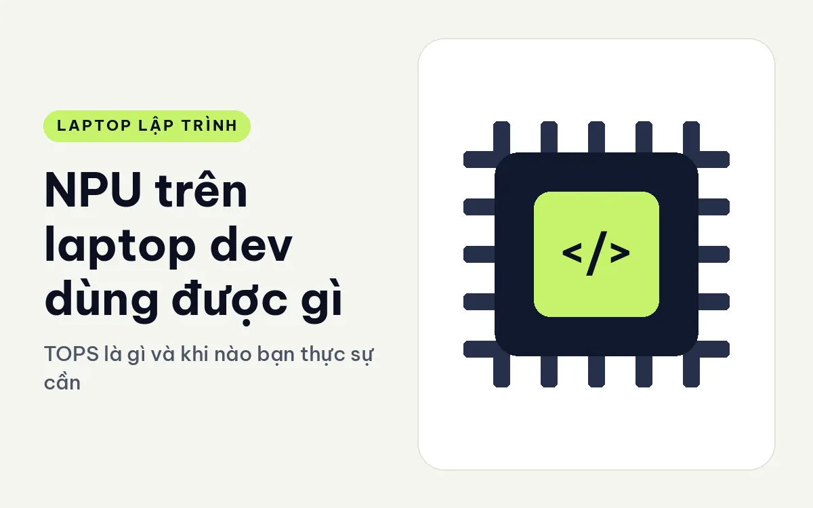
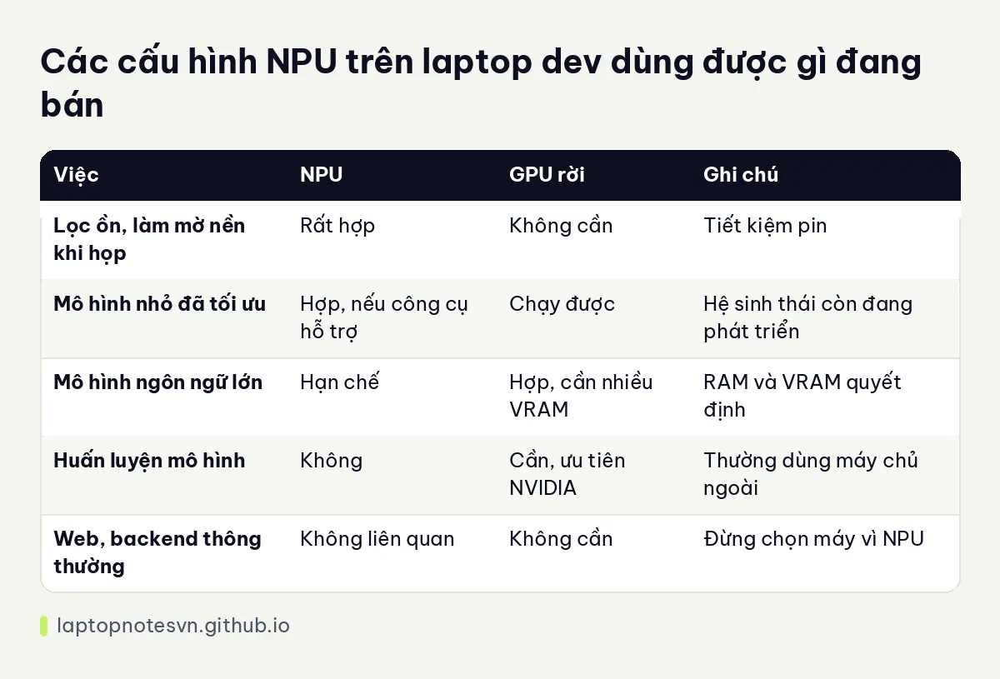

NPU trên laptop dev dùng được gì - TOPS là gì và khi nào bạn thực sự cần

Các hãng laptop gần đây ghi NPU rất nổi bật trên trang sản phẩm, kèm một con số đo bằng TOPS. Với người viết code, câu hỏi tự nhiên là: thứ này có giúp mình làm việc nhanh hơn không, hay chỉ là nhãn tiếp thị. Câu trả lời nằm ở giữa. NPU hữu ích trong một số việc cụ thể, nhưng nó không thay thế card đồ họa hay RAM khi bạn chạy mô hình lớn.
Bài này giải thích NPU là gì, TOPS đo cái gì, NPU hợp việc nào của dev, rồi áp vào các máy đang bán có NPU. Tôi nói theo nguyên lý, không đưa số đo tốc độ, vì phần mềm hỗ trợ NPU còn thay đổi nhanh.
NPU là gì và TOPS đo cái gì
NPU là khối xử lý chuyên cho tính toán trí tuệ nhân tạo, nằm ngay trong chip. Điểm mạnh của nó là làm các phép tính lặp của mạng nơ-ron với mức điện năng rất thấp. Cùng một tác vụ nhỏ, NPU thường tốn ít pin hơn nhiều so với CPU hay GPU thực hiện.
TOPS là số nghìn tỉ phép tính mỗi giây ở độ chính xác thấp. Con số cao nghĩa là khối này có năng lực tính toán lý thuyết lớn. Nó giống công suất đỉnh của động cơ: cho biết giới hạn, chưa nói được chiếc xe chạy thực tế ra sao, vì còn phụ thuộc phần mềm có tận dụng NPU hay không.
Nhiều máy mang nhãn máy tính tích hợp trợ lý AI yêu cầu NPU từ khoảng 40 TOPS trở lên. Các chip đời mới của Intel và AMD đã vượt mức đó, nên với máy tầm trung trở lên, NPU gần như là thứ có sẵn chứ không còn là điểm phân biệt.
NPU làm được việc nào cho dev
Việc dễ thấy nhất là các tính năng nền trong cuộc họp: lọc tiếng ồn, làm mờ nền, căn khung hình. Những việc này chạy liên tục và NPU lo giúp, nên CPU rảnh để chạy IDE hay Docker, pin cũng bớt hao khi bạn họp dài.
Việc thứ hai là chạy mô hình nhỏ cục bộ, như nhận dạng chữ, phân loại ảnh, gợi ý từ, hoặc mô hình ngôn ngữ cỡ nhỏ đã được tối ưu cho NPU. Bạn cần công cụ hỗ trợ đúng định dạng, thường qua các thư viện suy luận của hãng chip. Hệ sinh thái này còn trẻ nên đôi khi phải tự cấu hình.
Việc thứ ba là thử nghiệm: nếu bạn làm ứng dụng muốn chạy AI ngay trên máy người dùng, có NPU trong máy phát triển giúp bạn kiểm tra đúng môi trường đích.
Ngược lại, huấn luyện mô hình, chạy mô hình ngôn ngữ lớn hay dựng ảnh bằng AI vẫn cần GPU rời và nhiều VRAM, hoặc nhiều RAM hệ thống. NPU không gánh nổi những việc đó. Phần nào thuộc GPU, bạn có thể đọc GPU rời có cần cho lập trình.
Bảng so nhanh

| Việc | NPU | GPU rời | Ghi chú |
|---|---|---|---|
| Lọc ồn, làm mờ nền khi họp | Rất hợp | Không cần | Tiết kiệm pin |
| Mô hình nhỏ đã tối ưu | Hợp, nếu công cụ hỗ trợ | Chạy được | Hệ sinh thái còn đang phát triển |
| Mô hình ngôn ngữ lớn | Hạn chế | Hợp, cần nhiều VRAM | RAM và VRAM quyết định |
| Huấn luyện mô hình | Không | Cần, ưu tiên NVIDIA | Thường dùng máy chủ ngoài |
| Web, backend thông thường | Không liên quan | Không cần | Đừng chọn máy vì NPU |
Một vài lưu ý trước khi chọn máy vì NPU
Đừng so TOPS giữa các hãng như một thước đo duy nhất. Cách tính của từng khối khác nhau về độ chính xác số học và về phần cứng hỗ trợ, nên hai con số gần nhau chưa chắc cho kết quả gần nhau. Điều đáng xem hơn là phần mềm bạn dùng có hỗ trợ NPU của chip đó hay không.
Đồng thời, hãy nhớ rằng NPU chiếm một phần diện tích và ngân sách điện của chip. Một chip có NPU mạnh không có nghĩa nó build code nhanh hơn. Với dev thuần web hay backend, việc chọn máy vì NPU gần như không cải thiện công việc hằng ngày.
Nếu bạn định dùng trợ lý AI chạy cục bộ, hãy tính trước bộ nhớ. Mô hình đã nạp vào RAM sẽ chiếm chỗ của IDE và Docker, nên máy 16GB nhanh chóng chật, còn 32GB trở lên thoải mái hơn nhiều.
Áp vào máy đang bán
Lenovo ThinkPad T14 Gen 7 (2026) dùng chip Core Ultra 5 325 hoặc Core Ultra 7 355 với NPU 47 hoặc 49 TOPS, RAM 32GB LPCAMM2 nâng được tới 64GB. Đây là máy gọn, hợp người cần NPU cho họp trực tuyến và thử mô hình nhỏ mà vẫn ưu tiên pin và bàn phím.
Lenovo ThinkPad E14 Gen 8 (2026) có bản AMD Ryzen AI 5 330 với NPU 50 TOPS. Bản này có hai khe RAM, tối đa 64GB, nên khi cần mở rộng bộ nhớ để chạy mô hình, bạn có đường lên. Chip 4 nhân 8 luồng hợp việc nhẹ hơn là build nặng.
DELL XPS 16 DA16260 (2026) dùng Core Ultra X9 388H 16 nhân với NPU 50 TOPS, RAM 32GB LPDDR5X 9600 và màn 16 inch. Máy mạnh hơn hai máy trên, hợp người vừa code vừa làm việc có yếu tố AI cục bộ.
Về phần bộ nhớ để chạy mô hình, bài lập trình viên cần bao nhiêu RAM giải thích rõ hơn vì sao RAM thường là yếu tố quyết định.
Đăng ngày 09/11/2026